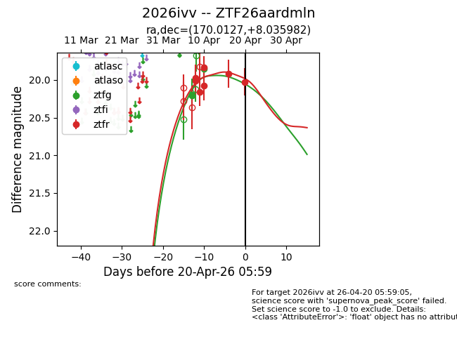
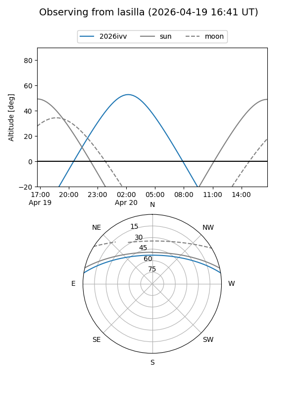
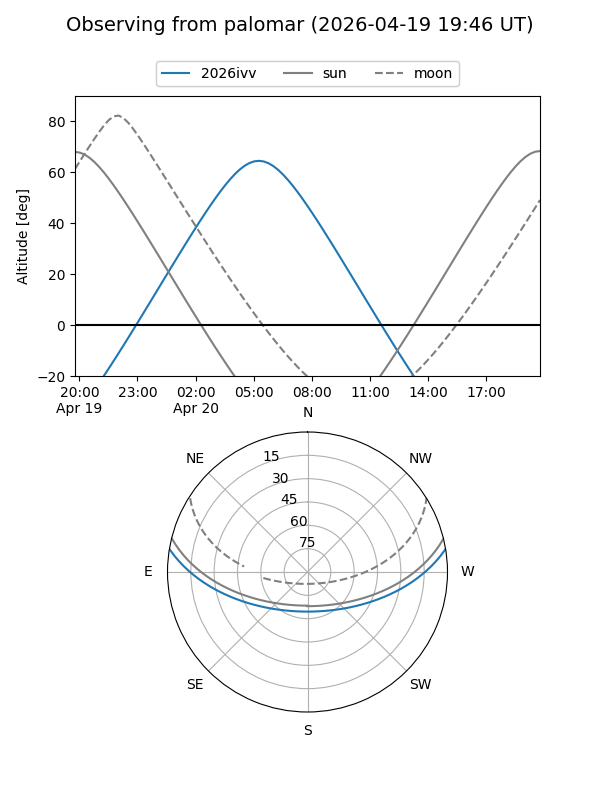
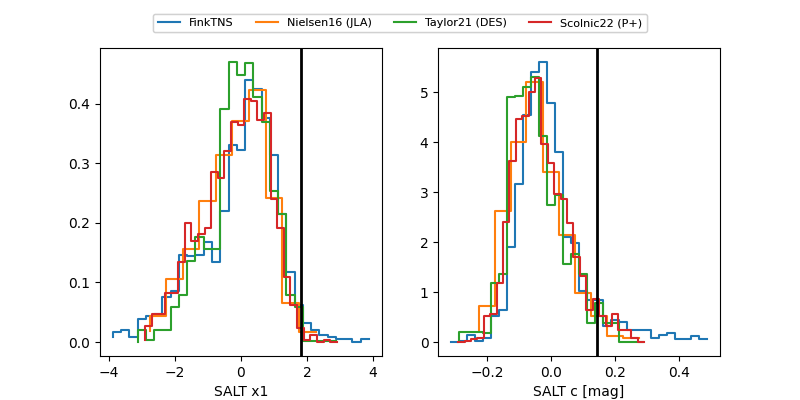

2026ivv
Target 2026ivv at 2026-04-20 06:09
Aliases and brokers:
FINK: link
Lasair: link
ALeRCE: link
TNS: link
YSE: link
alt names
ZTF26aardmln (ztf,fink_ztf)
2026ivv (tns,yse)
Coordinates:
equatorial (ra, dec) = 170.0127,+8.03598
equatorial (HMS+DMS) = 11:20:03.06,+08:02:09.54
galactic (l, b) = (250.1179,+61.14647)
Flags:
Photometry:
last ztfg=19.85, ztfr=20.03
3 ztfg, 7 ztfr detections
Lightcurve

Visibility


Additional plots
